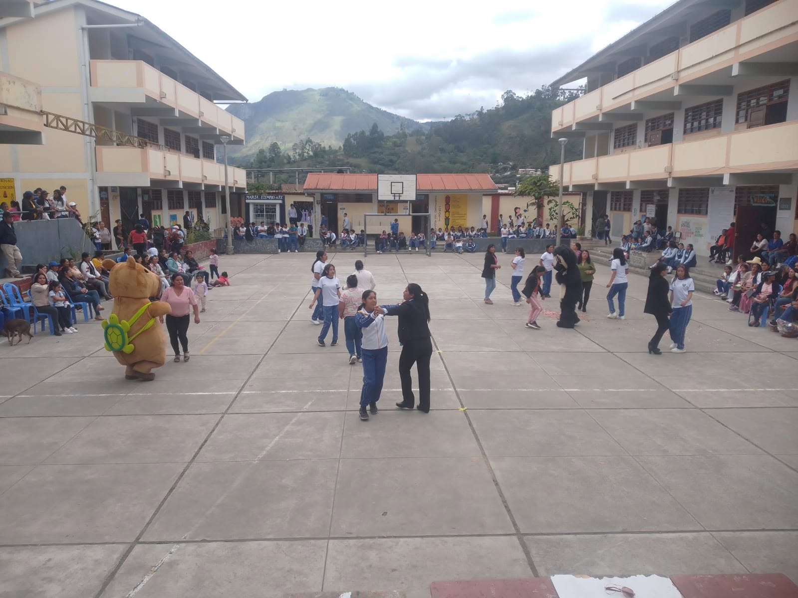
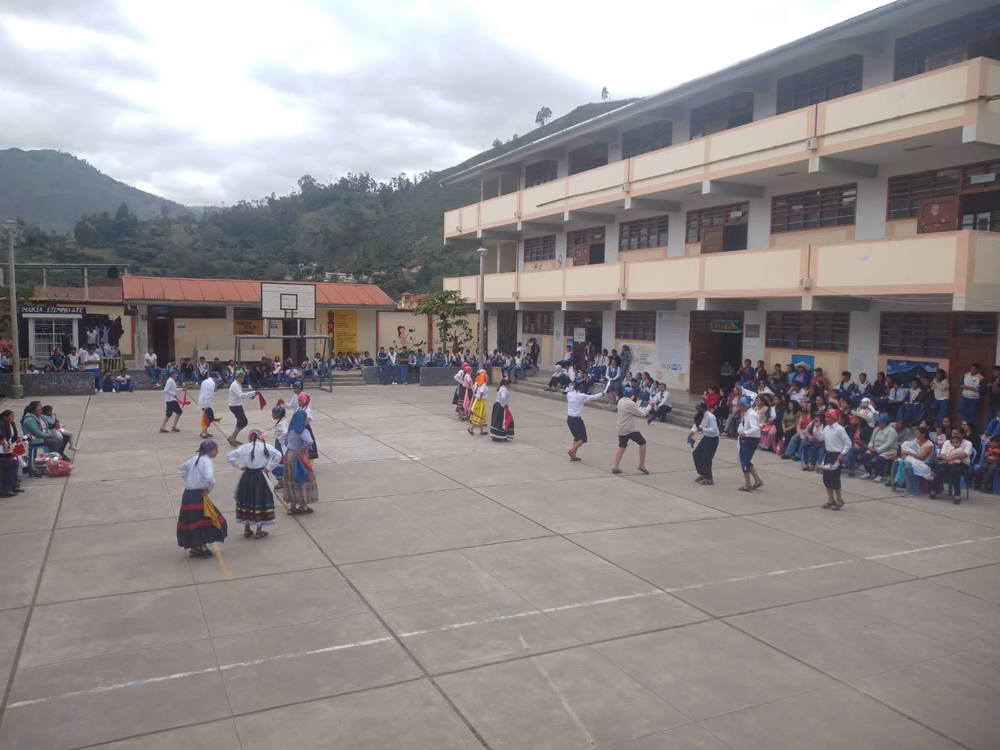
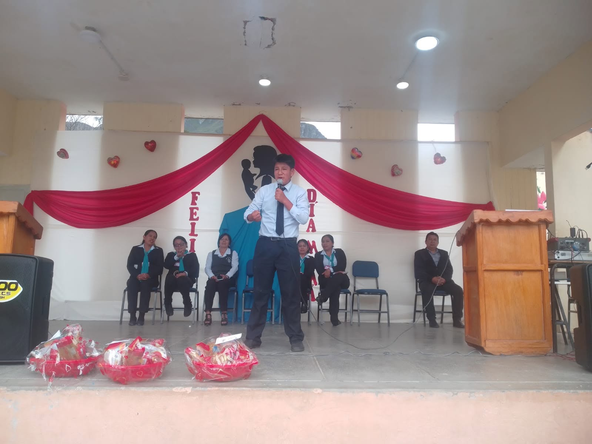
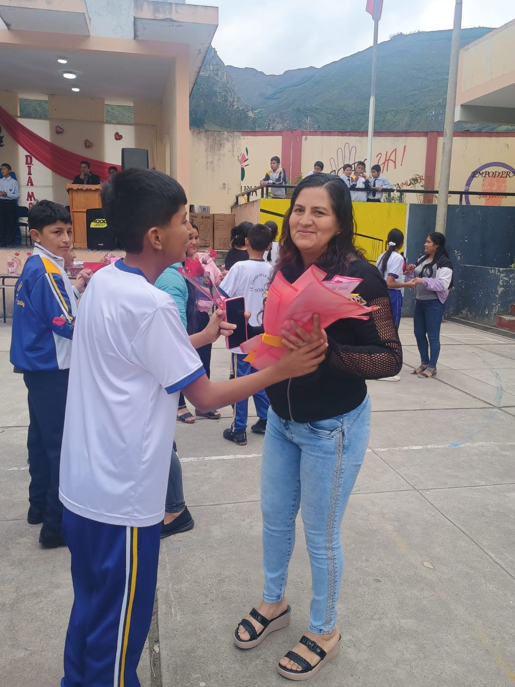
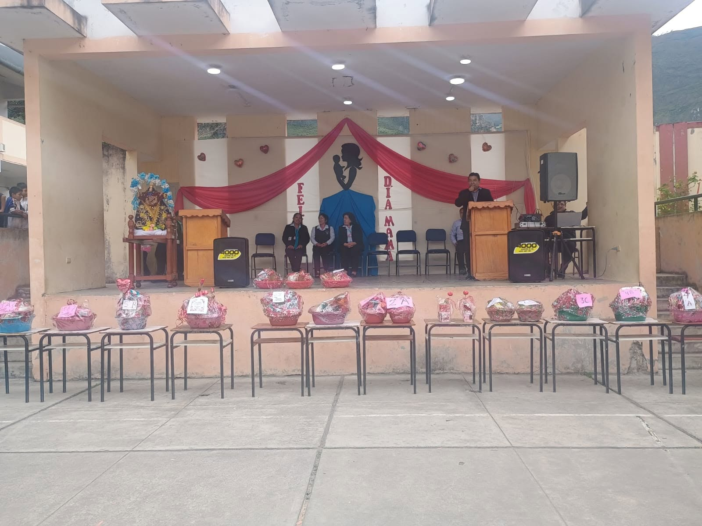
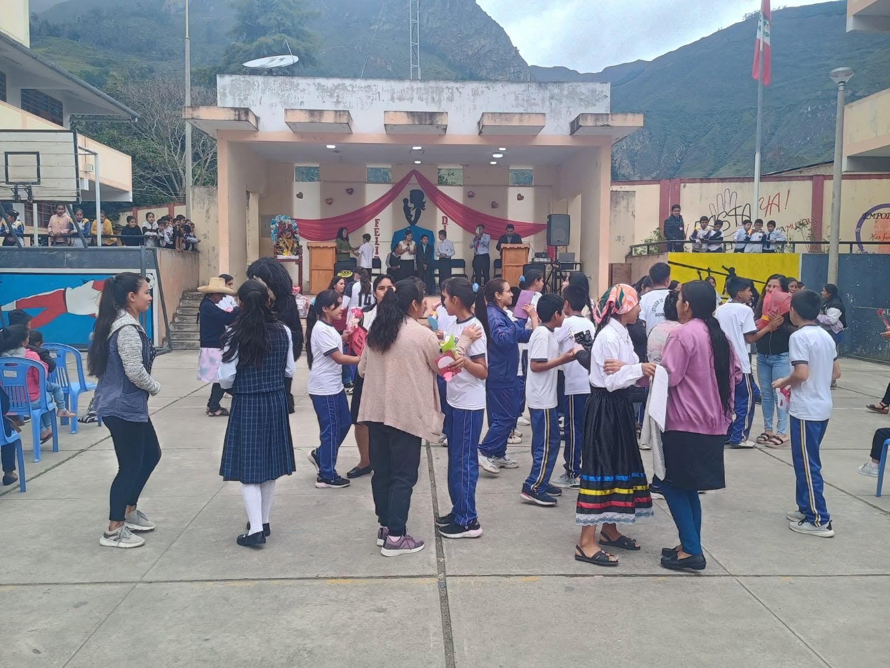

I.E. “Virgen de la Asunción”
Con gran alegría y profundo cariño, nos reunimos hoy para celebrar a quienes son el corazón de cada hogar: las madres. Este homenaje, preparado con esmero por nuestra comunidad educativa, está dedicado a cada una de ustedes, quienes con su amor incondicional, entrega y fortaleza guían y sostienen el camino de sus hijos.
Desde la Institución Educativa "Virgen de la Asunción", queremos expresar nuestro más sincero agradecimiento y reconocer su papel invaluable en la formación de ciudadanos con valores, esperanza y luz.





